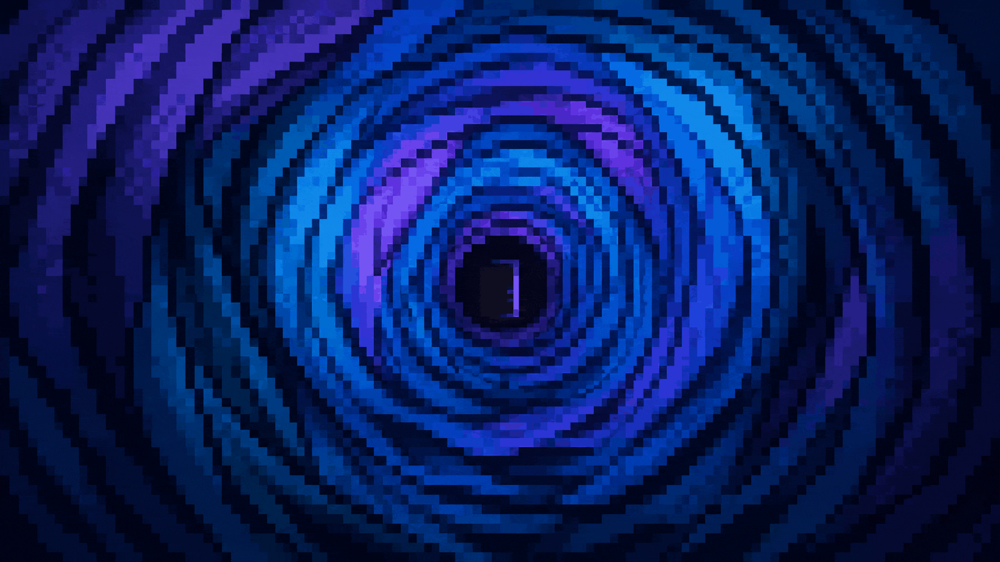
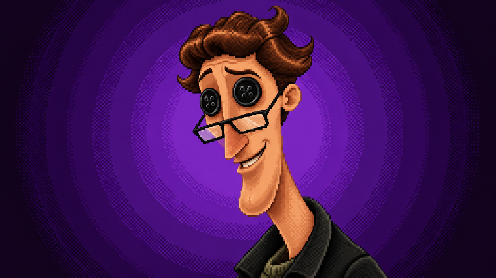

Você se mudou recentemente para a misteriosa Casa Cor-de-Rosa com seus pais e seu fiel escudeiro, o Catie. Enquanto explorava os cantos sombrios da casa nova, algo chamou a sua atenção, uma parede com uma pequena porta secreta.


Explore a casa e veja o que o Catie descobre ao redor.